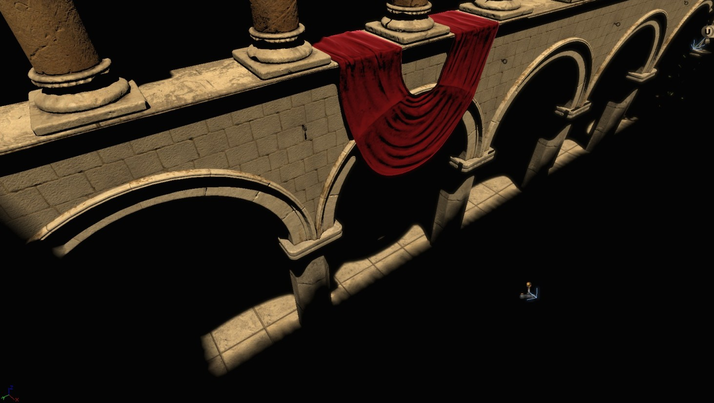

Distance Field Shadows
Document Changelog: Created by Daniel Wright.
Overview
Signed distance field shadows are a different approach to encoding precomputed shadows which was first introduced in QA_APPROVED_BUILD_JUL_2009, and is currently only used by dominant lights.
See the TechBlog entry titled 'Dominant Directional Light' for more info.
How they work
Distance field shadows are based off of a recent paper on alpha tested magnification (by Valve Software. The idea is to replace the standard shadow factor storage (0 for shadowed, 1 for unshadowed) with a distance to the nearest shadow transition instead. Then to reconstruct the shadow at runtime, simply scale and bias the distance into the desired penumbra size. The major benefit is that the shadow transition degrades more gracefully with distance fields as the resolution is lowered. When storing the shadow factor directly, lowering the resolution results in blockier and more aliased shadows. When lowering the resolution with distance field shadows, the shadow transition stays the same sharpness, but corners and high frequency turns in the shadow transition become more curved. In our test levels, signed distance field shadows on the dominant light at a resolution of 1/2 (in each dimension) looked better than storing the shadow factor at full resolution, even though the distance field shadows used 1/4th as much memory.
Limitations
The downsides are that only full light to dark shadow transitions can be reconstructed, so detailed shadows from foliage looks better with the old shadowing, and the penumbra size is not stored (to reduce memory usage), so the same penumbra size is used everywhere. Translucent shadows from the dominant light are also not supported, and precomputed ambient occlusion can't affect the direct lighting from the dominant light.
Comparison 1
Distance field shadows with varying penumbra size. Note that what is actually checked in has a uniform penumbra size to halve the memory usage. This was with 2 bytes per texel.

Shadow factor shadows at the same resolution as the above distance field shadows. Shadow factor shadows are what other toggleable lights use, at 1 byte per texel.
Shadow factor shadows at a higher resolution, tweaked to try to get the same quality as the distance field shadows. Resolution was increased by 2-4x in each dimension, the final lightmap memory was about 3.7x more than the 2 byte per texel distance field version.
Comparison 2
Distance field shadows.
Shadow factor shadows at the same resolution as the above distance field shadows.
Shadow factor shadows at a higher resolution, tweaked to try to get the same quality as the distance field shadows.
Important!
You are viewing documentation for the Unreal Development Kit (UDK).
If you are looking for the Unreal Engine 4 documentation, please visit the Unreal Engine 4 Documentation site.